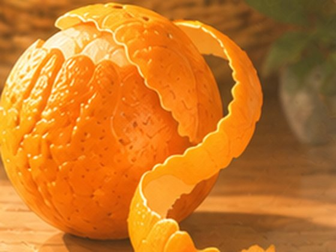
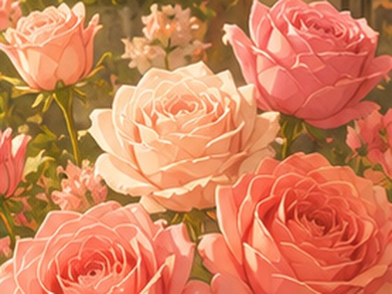
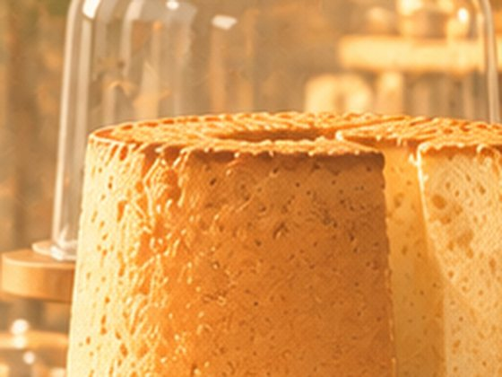

氣味很個人，同一個味道，每個人想到的畫面都不一樣。下面是我的觀察，不是標準答案：
看看你現在
最想要哪一種支持
你想要的是
安穩一點
很多人換跑道換到一半，每走一步都在算風險。不是不敢衝，是腳下還沒踩穩。
可以試試
- 算一下存款能撐幾個月，寫下來。有數字的焦慮，比一團模糊的好處理多了。
- 找一個可以隨時講真心話的人，一個就夠。
氣味具有神奇的魔力，可以一瞬間改變人的心情和狀態，Kures 提供療癒的精油香氛產品，這邊選購

你想要的是
先動起來
腦袋轉很快的人，最容易卡在「想好再開始」。想好這件事，通常是做了才會出現。
可以試試
- 今天只做一件 30 分鐘內做完的事：傳訊息給做這行的人、改一行履歷，或把產品第一版寫成三句話。
- 小到有點好笑也可以，先動了再說。
氣味具有神奇的魔力，可以一瞬間改變人的心情和狀態，Kures 提供療癒的精油香氛產品，這邊選購

你想要的是
有人看到你在做
換跑道的前半段，很努力但沒有成績可以秀，真的很消耗。
可以試試
- 每週寫三行：做了什麼、學到什麼、下週要做什麼。三個月後回頭看，你會嚇到。
- 找一個你信任的人，直接說「我最近在做這個，想讓你知道」。不用等別人來問。
氣味具有神奇的魔力，可以一瞬間改變人的心情和狀態，Kures 提供療癒的精油香氛產品，這邊選購

你想要的是
好好休息
很會撐的人，常常撐到忘記自己也會累。換跑道是長跑，不是衝刺，中途本來就要休息。
可以試試
- 這週挑一段時間，事業的事全部不碰，兩小時也好。
- 找一個不用你證明什麼的人聊天，聊什麼都行，就是不要聊進度。
氣味具有神奇的魔力，可以一瞬間改變人的心情和狀態，Kures 提供療癒的精油香氛產品，這邊選購
Sharon Ku｜氣味工程師